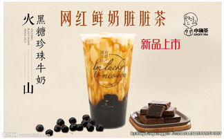
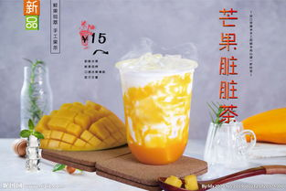
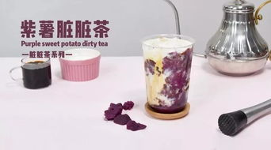
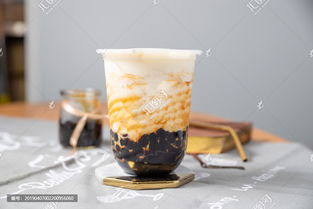

网红脏脏茶
- 珍珠100克，用适量清水煮开，然后放入珍珠，大火煮滚10分钟左右，看到珍珠已经通透了的时候，把火关掉，盖上盖子焖5分钟。捞出来，用凉开水冲一遍，冷却后放旁边备用。。
- 黑糖50克，放到小奶锅里，用小火慢慢把黑糖煮融化。
- 珍珠放入黑糖浆中边煮边搅拌，大概煮12分钟就可以把火关了。
- 用勺子把熬好的黑糖浆及珍珠舀出，沿着透明玻璃杯壁缓缓倒入，玻璃壁上粘着一些黑糖浆，最后把纯牛奶倒入杯子。

芒果脏脏茶
- 放入100g的芒果果肉。
- 把芒果果肉捣成泥。
- 果肉挂壁，加入优闲狐的冰糖浆。
- 搅拌均匀，把芒果捣出老的汁融为一体。
- 加入适量的冰块，牛奶至满。

紫薯脏脏茶
- 冰沙桶中加入蒸好的紫薯；
- 加入炼奶；倒入全脂牛奶
- 将倒入的材料打，倒入出品杯中。
- 出品杯中加入芋圆，不锈钢杯中加入鲜牛奶。加入果糖
- 不锈钢杯加热，倒入出品杯中。

黑糖脏脏茶
- 清水煮沸后，把珍珠倒进去。煮到珍珠全部都浮上来，就把盖子盖上大火煮10分钟。
10分钟之后，我们会看到珍珠是已经开始变得有点透明了，关火，盖上盖子再接着焖5分钟。
- 清水煮开之后，就把黑糖也放进去煮我这里大概150g的黑糖和200g的水。煮到沸腾的时候，会冒很多很多细密的泡泡，
要边煮边搅拌，以防它扑锅，所以奶锅尽量用深一点的，用小火慢慢熬煮。
- 7大概煮到水分蒸发掉一半这样就可以离火，倒出来放凉留着等会儿用。
- 把牛奶、黑白淡奶和茶包都放进去，加热到微微沸的状态，让牛奶充分吸收红茶的香味，就可以取出了如果喜欢茶味浓一点的，可以多放一个茶包，或者盖上盖子稍微焖一会儿。